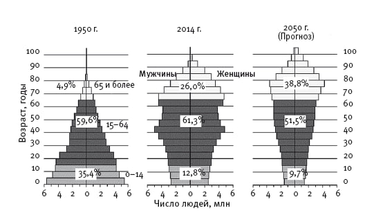

Численность населения Японии
Численность населения Японии на 2022 год составляет 125,633,598 человек.
Многие ошибочно полагают, что Япония перенаселенная страна. Однако это совершенно не так. Сейчас численность детей и подростков в Японии составляет около 13%. Пенсионеры же составляют около 1/4 населения. Многие семейные пары в Японии не заводят более 1-2 детей, а то и вовсе не имеют их, предпочитая отдать себя работе. Из-за этого молодое население страны почти не появляется на свет, а число пожилых людей в это же время не уменьшается. Работоспособным гражданам приходится платить большие налоги, чтобы государство могло выплачивать пенсии.
Рис.1 Половозрастная пирамида Японии
Сейчас правительство Японии старается, чтобы в семьях могло появляться хотя бы 2 ребенка. Хоть это и несильно исправит ситуацию, сокращение населения замедлится.
Национальный состав
В Японии население в подавляющем большинстве – коренные японцы. Иностранцев здесь проживает очень мало. По статистическим данным, в состав населения Японии, кроме самих японцев, входят корейцы, китайцы и представители других стран. Доля японцев в общей массе населения – 97%.
_